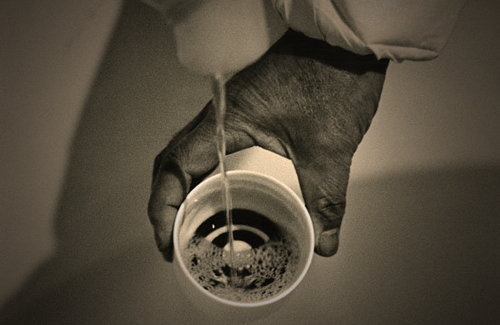

What is Sake?
Sake is known for 2000 years of unique Japanese traditional and culture.To understand the process of making sake, it helps to know that sake is brewed from water, rice, and yeast.
JAPAN is home of about 2000 sake breweries or kuramoto (The president of a brewery) and each one prides itself on the distinct local character of it's sake.
History
Sake is the traditional rice wine of Japan. It comes in several different varieties, and was first made at least 2,000 years ago. Since then, sake has played an important role in Japanese culture and history. From its origins as the "drink of the Gods" to its current status as the popular drink in Japan, the history of sake is steeped in tradition, innovation, and custom.
Production of Sake
Sake - though long shrouded in misconception, veiled by language, and isolated by island geography - is one of the most refined, interesting, and enjoyable beverages in the world. In its finer manifestations, it is as fascinating in flavor, fragrance, and history as any wine, spirit, or beer. But before getting into that, it is important to address the question of just what sake is, and how it is made. The process could be simply divided in seven steps.
1.Rice Polishing (Seimai)
Good sake rice differs from rice eaten at meals in many ways. An important difference is the concentration of starches in the center of the grain of proper sake rice. Surrounding that starchy center are fats, proteins, and minerals that are generally detrimental to the sake-brewing process.
2. Washing and Soaking (Senmai and Shinseki)
After the rice has been polished to the designated degree, it is washed (senmai) to remove the nuka, the talk-like powder still clinging to it from the polishing process. It is then soaked in water (Shinseki) to prepare it for the steaming process.
3. Steaming (Mushimai or Jomai)
The condition of the rice after it has been steamed- how firm or mushy it is, for example- affects every brewing step on down the line. After the rice has been steamed, it is cooled by spreading it out on large pieces of cloth in the cool kura air, or by running it through a machine that breaks up the clumps and cools it down quickly.
4. Koji Production (Seikiku, or Koji-zukuri)
Koji is steamed white rice onto which a mold, called koji-kin (koji-mold), has been cultivated. Koji production is the heart of the sake-brewing process.
5. Yeast Starter (Moto or Shubo)
Koji, regular steamed rice, and water are mixed in a small vat, and to this is added a culture of pure yeast cells. Usually a small amount of lactic acid, to protect the fledgling yeast cells from ill-intentioned bacteria floating in the air, is added as well. Over a two-to three-week period, the koji breaks down the starches to provide food for the yeast cells, which multiply rapidly until the mixture is ready to heave increasingly larger amounts of rice, koji, and water added to it.
6. Moromi and Sandan Shikomi
The moto (yeast starter) is transferred to a larger vat, where rice, koji, and water are added, typically three times. From this point the mash is known as the moromi. These three additions of rice, water, and koji that is a method known as sandan shikomi (three-step brewing) are done over a four-day period.
After all the rice, water, and koji have been added, the moromi its and ferments anywhere from eighteen to thirty-two days.
7. Pressing (Joso)

At this point, the moromi is ready to be pressed through a mesh that will separate the newly born sake from the solid remains of the fermented rice, which is known as kasu.
Categories of Sake
Sake is not categorized by rice varieties. Rather, it is first categorized by milling rates of polished brewing rice and then further classified by the ingredients of the sake under name such as junmai (純米) and honjozo (本醸造).
The most important thing to remember is if the sake is made of just rice and water, it is distinguished by the term junmai. Sake brewers also add a bit of distilled alcohol to some types of sake to bring out different flavors, aromas, and textures, and this creates a new category called honjozo for these alcohol-added sakes. But to confuse you a bit more, the term junmai also historically means sake that has been milled at least 30 percent with 70 percent of each grain remaining.
| Categories |
Japanese |
Added alcohol |
Rice milling rate |
| Junmai |
純米 |
none |
typically up to 70% |
| Junmai Ginjyo |
純米吟醸 |
none |
up to 60% |
| Junmai Dai-ginjyo |
純米大吟醸 |
none |
up to 50% |
| Honjozo |
本醸造 |
up to 10% |
up to 70% |
| Ginjyo |
吟醸 |
up to 10% |
up to 60% |
| Dai-ginjyo |
大吟醸 |
up to 10% |
up to 50% |
| Futsu |
普通 |
up to 10% |
--- |
Futsu-shu, 普通酒
It means “ordinary sake," and refers to average, run-of-the-mill, “table sake." This type of sake makes up about 75 percent of all sake on the market, and while much of this is cheap, bland, and hangover inducing, there are many perfectly drinkable futsu-shu sake available.
Junmai-shu, 純米酒
It is pure rice sake: nothing is used in its production except rice, water, and koji-kin, that magical mold that converts the starch in the rice into fermentable sugars. Junmaishu is generally a bit heavier and fuller in flavor than other types of sake, and often the acidity is a bit higher. More solidly built, assertive sake like typical junmaishu is easier to match with meals that much lighter sake. It is not necessarily, however, what everyone prefers.
Ginjo-shu, 吟醸酒
It is, more than just a separate classification, is a separate world. Essentially a ginjosu-designated sake is one for which the rice used in brewing has a seimaibuai (rice polishing rate) of at least 60 percent, which again means that no more than 60 percent of the original size of the grains remains after milling. This, however, is simply the minimum requirement for sake to have the word ginjo-shu on the label. Within the classification of ginjo-shu there is the subclass dai-ginjo-shu. For dai-ginjo-shu, the seimaibuai is a minukum of 50 percemt.
Honjozo-shu, 本醸造酒
It is sake to which a very small amount of pure distilled alcohol has been added. Adding a small amount of alcohol to premium sake like that is not just a matter of increasing yields; there are sound technical reasons for doing it. First of all, it can lighten the flavor, making sake a it more drinkable, in the opinion of many. Also, adding a bit of alcohol at that precise stage tends to pull out more fragrant and flavorful components.
Other Type of Sake
Nigori-sake, 濁り酒
Nigori is a sake that has been purposely left unfiltered and has the less or rice polishings left in the bottle. Typically, the sake looks foggy or cloudy. It is also called unfiltered sake or cloudy sake.
Gen-shu, 原酒
It is sake that has been purposely left undiluted with no extra water added to bring the alcohol level down from its natural fermentation percentage of between 18 and 20 percent. Gen-shu typically has an alcohol content between 14 and 16 percent that is higher than common sake.
Nama-zake, 生酒
It is sake that is not heated during the brewing process. This helps preserve the fragrance and flavor of the sake, but results in sake that spoils more easily. If possible, Namasake should be drunk as soon as possible after brewing.It is referred to as “living" sake. Sake is usually pasteurized twice.
Taru-zake, 樽酒
It is sake that has been stored or aged for some time in a cedar cask called a taru, and therefore takes on a relatively strong flavor imparted by the wood.
Ko-syu, 古酒
It is aged sake. This term does not have an overly strict definition, and will vary from kura to kura, although it generally refers to sake aged at least three years.
Kimoto, 生酛
It is raw “moto (Yeast mash used to ferment the sake. Also called Shubo)" that has passed down for generations. It is used to contrast with scientifically produced moto. The process of creating kimoto takes nearly a month to complete, but allows for the creation of truly traditional sake.
Regions
The Japanese archipelago stretches far from north to south, so it is only natural that each region has its own climate and cuisine. The raw materials used to make sake, mainly rice and kobo yeast, also differ somewhat by region, so the character of the sake served with the local cuisine is somewhat different, as well. Here is the infographic of Japanese region map.
Kanto and Koshinetsu Area
Niigata, Nagano, Gunma, Tochigi, Ibaraki, Chiba, Saitama, Tokyo, Kanagawa, and Yamanashi prefectures
Kinki and Chugoku Area
Shiga, Hyogo, Nara, Kyoto, Osaka, Wakayama, Tottori, Okayama, Hiroshima, Shimane, and Yamaguchi prefectures
Shikoku and Kyushu Area
Kagawa, Tokushima, Kochi, Ehime, Oita, Fukuoka, Saga, Nagasaki, Kumamoto, Miyazaki, Kagoshima, and Okinawa prefectures
The northern island of Hokkaido is cool in summer and cold in winter, so sake matures more slowly there. This generally makes for a smoother texture and a lighter taste.
Full-bodied, velvety sake is prominent in this region from Aomori Prefecture to northern Yamagata Prefecture. Akita Prefecture is the biggest producer in the Tohoku region.
top
Greater Tokyo, home to millions of discerning consumers, occupies a large part of the Kanto region, and much of the sake brewed here has a refreshing personality. Ibaraki has more sake breweries than any other prefecture in the region.
Niigata Prefecture is known for its refined, dry sake, and is the third largest center of production in Japan. Mountain ranges cut Nagano Prefecture off from the rest of the country, and the “Japan Alps yeast" produced here gives a distinctively fragrant character to Nagano sake. Sake from Yamanashi Prefecture is known for its pleasantly unassuming flavor.
top
Each prefecture in this region produces its own distinctive sake: Ishikawa’s is mellower, Toyama’s favors refinement, while Fukui’s tends more toward a smooth, velvety finish. The rich culinary culture of the old castle town of Kanazawa, which was the center of the bountiful rice-growing feudal province of Kaga, has retained its traditions since the Edo period (1603-1867).
Shizuoka Prefecture is the best-known center of production in the Tokai region, and much of the sake brewed there is of the ginjo-shu type with a fruity flavor. The other three prefectures in the region produce sake with a pronounced, slightly sweet flavor. Sake from Aichi Prefecture has a mellow character.
top
Hyogo Prefecture is the largest center of production that is one of the best in Japan. The premium miya-mizu water used in the Nada district is somewhat hard, yielding crisp, strong sake. On the other hand, the soft water used in the Fushimi district of Kyoto Prefecture, Japan’s second most important center of production, results in a velvety, high-quality sake. Osaka has been famous for its sake since the 1600s, and many breweries there still pride themselves on following traditional methods.
Hiroshima Prefecture produces sweet sake with a mellow character. The Omachi variety of rice grown in Okayama Prefecture is considered as good for making sake as Yamada Nishiki. It yields a more robust beverage than the more delicate sake brewed from Yamada Nishiki rice.
top
Kochi Prefecture faces the Pacific Ocean and produces dry, robust sake with a friendly kick, whereas the other three prefectures face the Seto Inland Sea and produce sake with an entirely different character—delicate on the palate, sweet to the taste.
Kyushu is known for a distilled liquor called shochu (awamori in Okinawa). Even so, sake holds its own in this part of Japan, and Fukuoka has many sake breweries. Kumamoto Prefecture is home to the Kumamoto yeast. Much of the sake brewed in Kyushu has a rich, sweet flavor, except for Kumamoto where dryness is favored.
top
Before talking about which sake to drink with which food, it should be noted that most sakes will go well with not only Japanese food, but most foods from all over the world. When talking about matching sake with food, sake is often divided into four categories based on fragrance and taste that are Kunshu (薫酒), Soshu (爽酒), Junshu (醇酒), and Jukushu (熟酒).
Fragrant Sake (Kun-shu)
Flavor and Aroma
Kun-shu is sake with a strong fragrance like blossoms and light fresh taste, sharp fruitful flavor, especially common in ginjo and daiginjo sake. Especially it is good as an aperitif. Types vary from sweet to dry.
Food
Kun-shu is best with delicately flavored, light dishes such as white fish, steamed chicken, or citrus dishes. Dishes with flavors that might overpower the sake should generally be avoided.
top
Mature Sake (Juku-shu)
Flavor and Aroma
Juku-shu is rich in both flavor and fragrance, and is often found in sakes that have been aged for several years. It is known for its rich golden color, this rare and precious flavor type is enjoyed by sake-experts. In addition to being drank with a meal, it is also good to enjoy leisurely after finishing eating. Koshu (Aged sake) is common in this type. It has a complex and mature aroma of dried fruit and spice, which comes with the combined taste of mellow sweetness and deep sourness.
Food
Because it has a well-expressed taste, it goes well with foods that might overpower other varieties of sake, including duck, lamb, blue cheese, or grilled fish. However, delicate flavors such as sashimi can be overpowered and would be best enjoyed with a different variety of sake.
top
Light & Smooth (So-shu)
Flavor and Aroma
So-shu is delicate in both fragrance and flavor, and includes most namazake, as well as some honjozo and junmai sakes. An all-round player loved by everyone due to its clear and dry taste. The soft aroma is light and refreshing, with silk smooth texture.
Food
It goes well with most varieties of food, but is especially good with vegetable dishes or shellfish. However, it generally doesn't go well with greasy food.
top
Rich (Jun-shu)
Flavor and Aroma
Jun-shu is full-bodied, but has only a slight fragrance, and is ideal for drinking during a meal. Most junmai sakes fall into this category. It is most traditional type of sake.
Food
Its full bodied flavor and aroma makes it a good complement for beef, creamy soups, strongly flavored chicken, and others. Like Juku-shu, it may overpower lighter dishes.
top
Temperatures of Sake
Sake is one of alcohols in the world that are tasted in widest temperature range. Some sake is tasted nicely around 10 °C while the other kind of sake is good around 40 °C. One could be tasted suitably at different temperatures. Different temperatures create different tastes.
Hot Warm, 熱燗/Atsu-kan
50°C/122°F
Strength of fragrance increases; smell of alcohol becomes strong and sweetness disappears; feeling of stimulation is heightened.
Upper Warm, 上燗/Joh-kan
45C/113°F
Fragrance becomes more prominent. Balance of sweetness, acidity and bitterness improve in certain kinds of sakes; flavor becomes stronger.
Room Temp., 常温/Jo-on
20°C/68°F
Natural sense of flavor and taste inherent in sake can be enjoyed; total effect is mild.

{kind=link}
{kind=link}
{kind=link}
{kind=link}
{kind=link}
{kind=link}
{kind=link}
{kind=link}
{kind=link}
{kind=link}
{kind=link}
{kind=link}
{kind=link}
{kind=link}
{kind=link}
{kind=link}
{kind=link}
{kind=link}
{kind=link}
{kind=link}
{kind=link}
{kind=link}
{kind=link}
{kind=link}
{kind=link}
{kind=link}
{kind=link}
{kind=link}
{kind=link}
{kind=link}
{kind=link}
{kind=link}
{kind=link}
{kind=link}
{kind=link}
{kind=link}
{kind=link}
{kind=link}
{kind=link}
{kind=link}
{kind=link}
{kind=link}
{kind=link}
{kind=link}
{kind=link}
{kind=link}
{kind=link}
{kind=link}
{kind=link}
{kind=link}
{kind=link}
{kind=link}
{kind=link}
{kind=link}